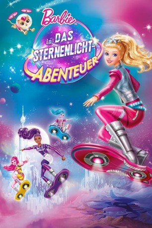

gesehen am 04.09.2016
gesehen am 04.09.2016Alternativ: Barbie: Star Light Adventure gesehen am 04.09.2016
 
 IMDB-Wertung: 5.6 / 10
IMDB-Wertung: 5.6 / 10  Metascore:
Metascore: 
In Begleitung ihres treuen Haustiers Popcorn begibt sich Barbie (Stimme im Original: Erica Lindbeck) auf ihrem Hoverboard für eine abenteuerliche Reise zu einem fernen und wunderschönen Planeten. Als eines Tages jedoch die glitzernden Sterne der Galaxie ihr Licht verlieren, ist sie fest entschlossen eine Rettungsaktion zu wagen, damit der einst leuchtende Tanz am Firmament nicht zum Stillstand kommt. Zusammen mit einem Spezialteam reist sie zum Hauptplaneten, wo sie auf den galaktischen Hoverboard-Champion Sal-lee (Kimberly Woods) trifft und viele neue Freunde findet. Barbie beginnt zu begreifen, dass sie auf ihr Herz hören muss, damit sie, mit der Hilfe ihrer Freunde, zu der Herrscherin werden kann, die das Universum braucht.
Jahr: 2016
Dauer: 79 Minuten
FSK:
Land: USA Studio: Fathom EventsTonspuren: DTS - ,
Untertitel:
Auflösung: 1080p (1920x1080) Größe: 4055 MB
Genre: Animation/Trick, Familie
Regisseur: Andrew Tan, Michael Goguen
Drehbuch: Anaïs Nin
Soundtrack:
Darsteller:
 Erica Lindbeck als Barbie
Erica Lindbeck als Barbie Robbie Daymond als Leo
Robbie Daymond als Leo Dwight Schultz als Constantine
Dwight Schultz als Constantine Sarah Anne Williams als Sheena / Kareena / Sprites
Sarah Anne Williams als Sheena / Kareena / Sprites Lucien Dodge als Pupcorn
Lucien Dodge als Pupcorn Laura Post als Narrator
Laura Post als NarratorDatei: X:\Kinder Collections\Barbie\Barbie 32 Das Sternenlicht (2016, FSK, 1920x1080).mkv seit 02.09.2016
Festplatte: Kinder-Filme+Trick
 Es gibt insgesamt 40 Filme in der Gruppe 'Kinder Collections\Barbie'
Es gibt insgesamt 40 Filme in der Gruppe 'Kinder Collections\Barbie'